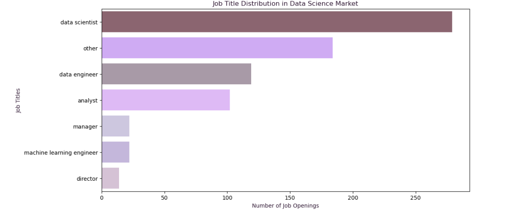
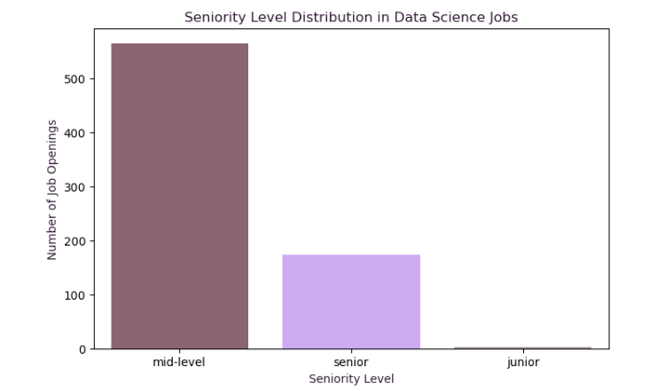
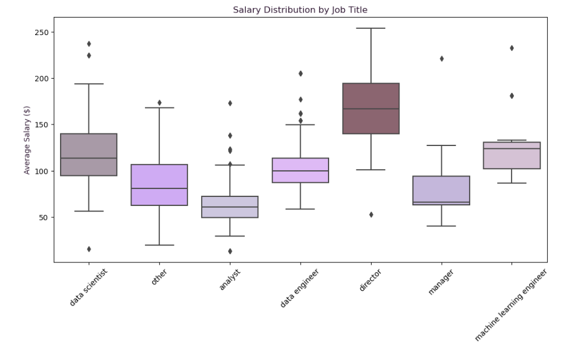
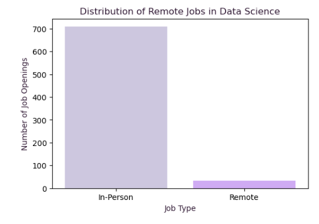
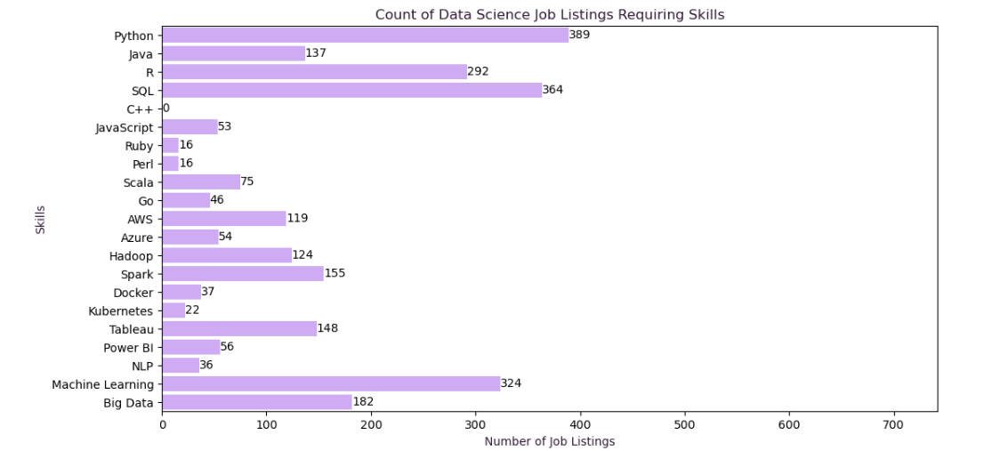
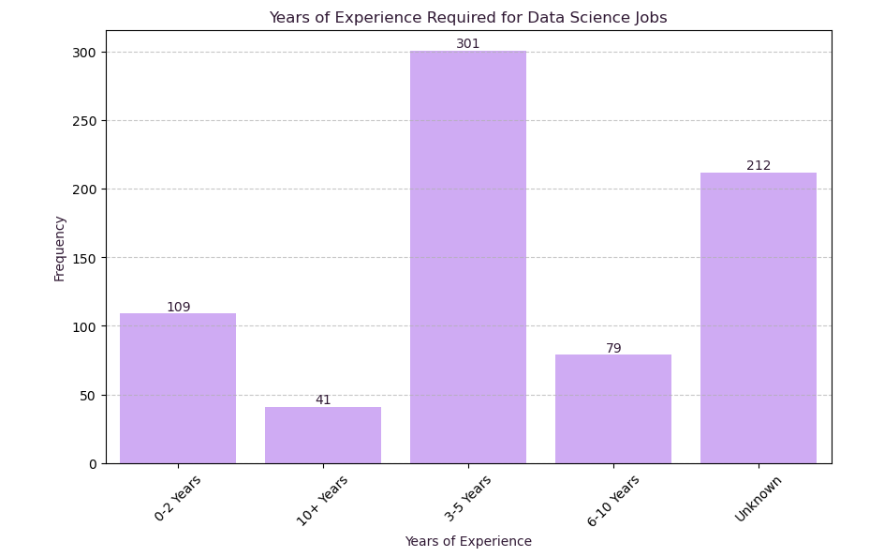
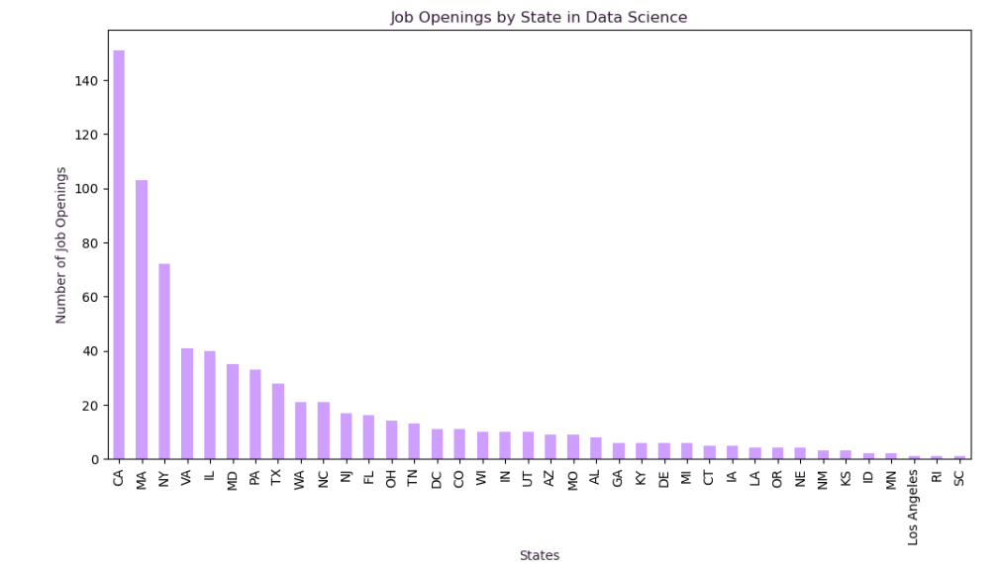
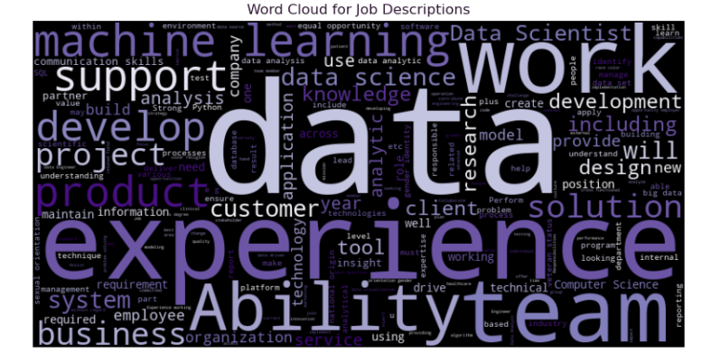

Observation: Data Scientist, Data Engineer and Analyst roles are the most prevalent, indicating their high demand in the industry.

Observation: The majority of jobs are aimed at mid-level professionals, suggesting fewer opportunities for entry-level or highly senior positions.

Observation: Leadership roles like Director and technical roles like Data Scientist and Machine Learning Engineer tend to command higher salaries compared to analyst or manager positions. There are some outliers, especially for roles like Data Scientist, Machine Learning Engineer, and Director, indicating a few extreme salary values.

Observation: Remote jobs are fewer compared to in-office roles, though remote work is available as an option.

Observation: Python is the most in-demand skill, followed closely by SQL and ML, reflecting their critical importance in the data science field.

Observation: Most jobs require between 3-5 years of experience, indicating that mid-level professionals are in high demand.

Observation: California, Massachusetts, New York are the top states for data science job opportunities, reflecting their prominence as tech hubs.

Observation: Frequent words include "data," "experience," "team," and "machine learning," indicating the emphasis on data skills and collaborative work in job listings.
Conclusion: This analysis highlights key insights into the data science job market, revealing trends in job titles, salaries, required skills, experience levels, and job types (remote vs in-person). These insights can be useful for both job seekers and employers in the data science field.